Введение
Автоматизированная система платной парковки будет использоваться для создания пространства
парковки заданного размера с прилегающей к ней дорогой, задания дневного и ночного тарифа оплаты,
запуска моделирования работы платной парковки и настройки параметров моделирования.
Программа использует базу данных PostgreSQL.
Программная система совместима с операционными системами Windows 10 и выше.
Системные требования: 32 Mb жесткого диска, 50 Mb оперативной памяти.
Авторизация, запуск программы
Данная программная система подразумевает работу в двух режимах:
режим "Администратора" и режим "Менеджера."
После запуска системы откроется окно авторизации, представленное на рисунке.
В данном окне пользователь может ввести данные для входа в учетную запись (логин и пароль)
и нажать на кнопку «Войти», чтобы система настроила интерфейс под соответствующую роль «Менеджер» или «Администратор».
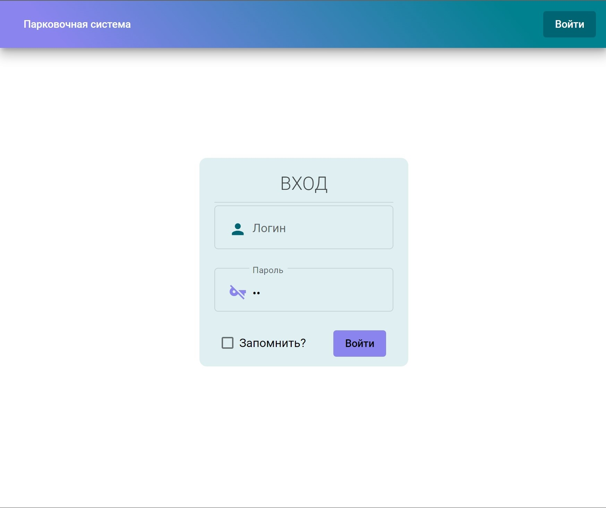
Если данные введены верно, то система определит права пользователя и откроет окно главного меню в соответствии с ролью пользователя.
Основными функциями режима администратора являются:
- Создание/редактирование топологий
- Настройка параметров топологии
- Работа с шаблонами
- Сохранение топологии в файл
- Загрузка файла с топологией
- Работа с учетными записями
Основными функциями режима менеджера являются:
- Загрузка файла с топологией
- Настройка параметров моделирования
- Управление моделированием
Работа с системой в режиме администратора
После авторизации учетной записи в роли администратора пользователь переходит к форме
главного меню администратора, представленной на рисунке.
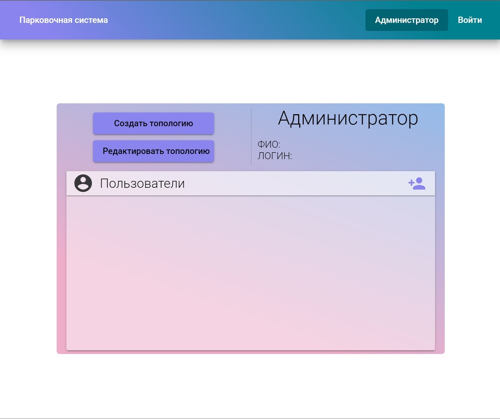
Создание/редактирование топологий, настройка параметров топологии
На форме администратора пользователь может создать или редактировать топологию парковки,
нажав на кнопки «Создать топологию» и «Редактировать топологию» соответственно.
При нажатии на кнопку «Создать топологию» открывается экранная форма настройки параметров топологии,
где администратор может задать название, высоту, ширину, а также расположение прилегающей к пространству парковки дороги.
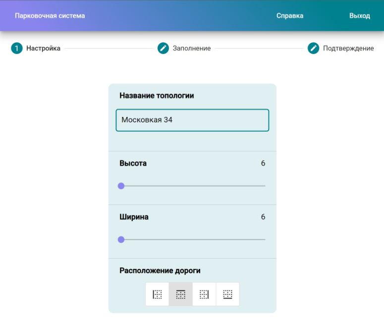
При нажатии на кнопку «Редактировать топологию» появится окно для выбора файла топологии, после открытия
которого откроется экранная форма создания топологии, представленная на рисунке выше, с уже ранее заданными параметрами.
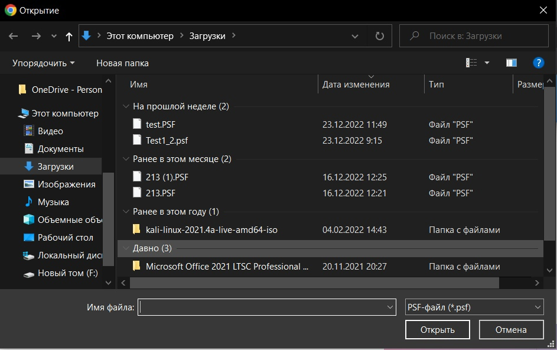
Работа с шаблонами
При нажатии на кнопку «Заполнение» открывается экранная форма конструирования пространства парковки, где администратор имеет возможность из шаблонов
сконструировать собственную парковку, путем перетягивания их на поле пространства парковки.
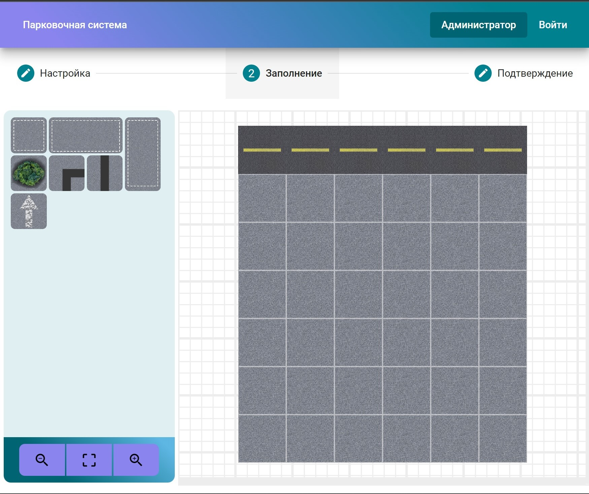
Также имеется возможность при помощи специальных кнопок осуществить увеличение , уменьшение
масштаба и развернуть окно на весь экран .
Cохранение топологии в файл
При нажатии на кнопку «Подтверждение» откроется экранная форма сохранения парковки, где у администратора есть возможность сохранить файл,
нажав на кнопку «Сохранить», после чего система начнет загрузку файла на устройство и откроет экранную форму главного меню администратора.
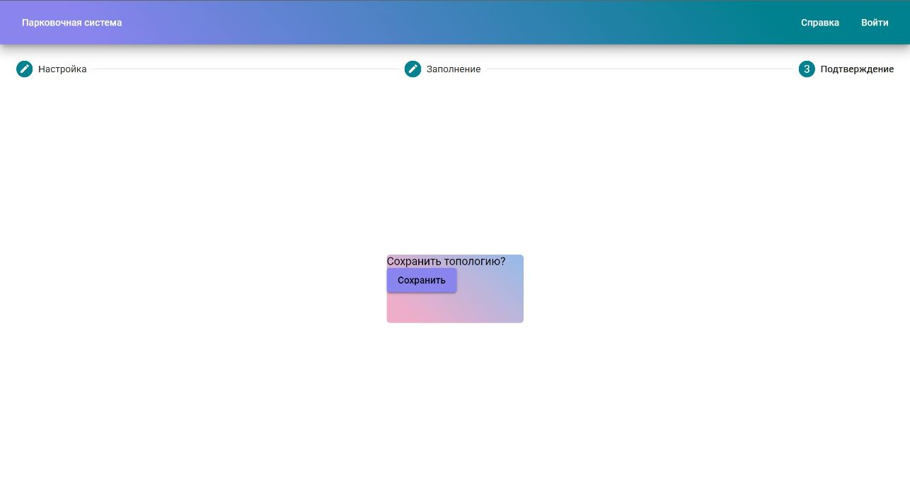
Работа с учетными записями
Администратор может создавать, редактировать и удалять учетные записи менеджеров при помощи
специальных кнопок на экранной форме главного меню администратора.
При нажатии на кнопку открывается форма создания учетной записи менеджера, где администратор может заполнить поля
«ФИО», «Логин», «Пароль», а затем нажать на кнопку «Зарегистрировать».
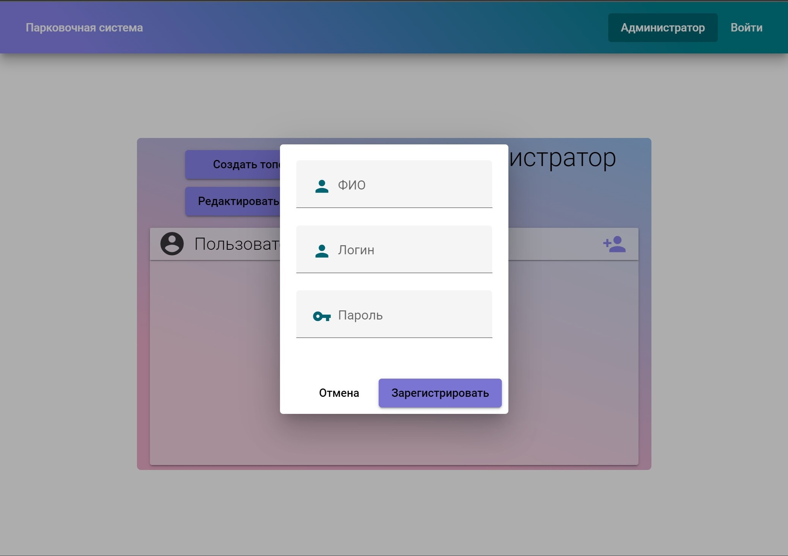
После этого произойдет возврат на экранную форму главного меню администратора, где появится новая учетная запись менеджера.

При нажатии на кнопку откроется экранная форма редактирования менеджера, где администратор может изменить данные менеджера
после чего нажать на кнопку «Редактировать» для сохранения изменений.
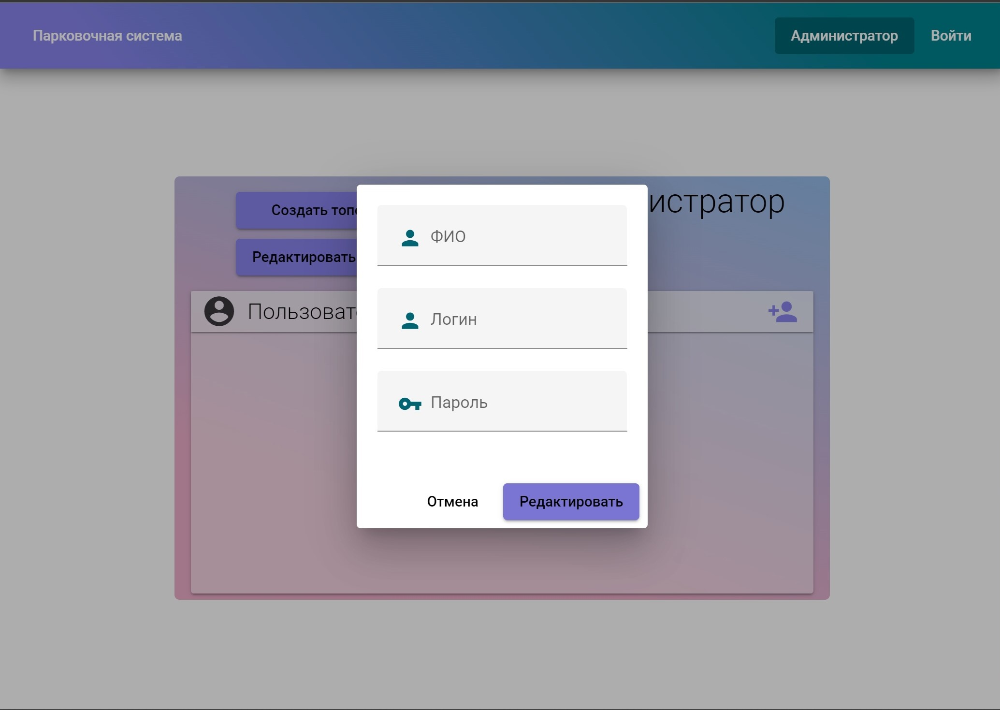
При нажатии на кнопку администратор может удалить учетную запись менеджера.
Работа с системой в режиме менеджера
После авторизации учетной записи в роли менеджера пользователь переходит к форме главного меню менеджера,
где он может увидеть ФИО и логин учетной записи, а также кнопку «Загрузить топологию».
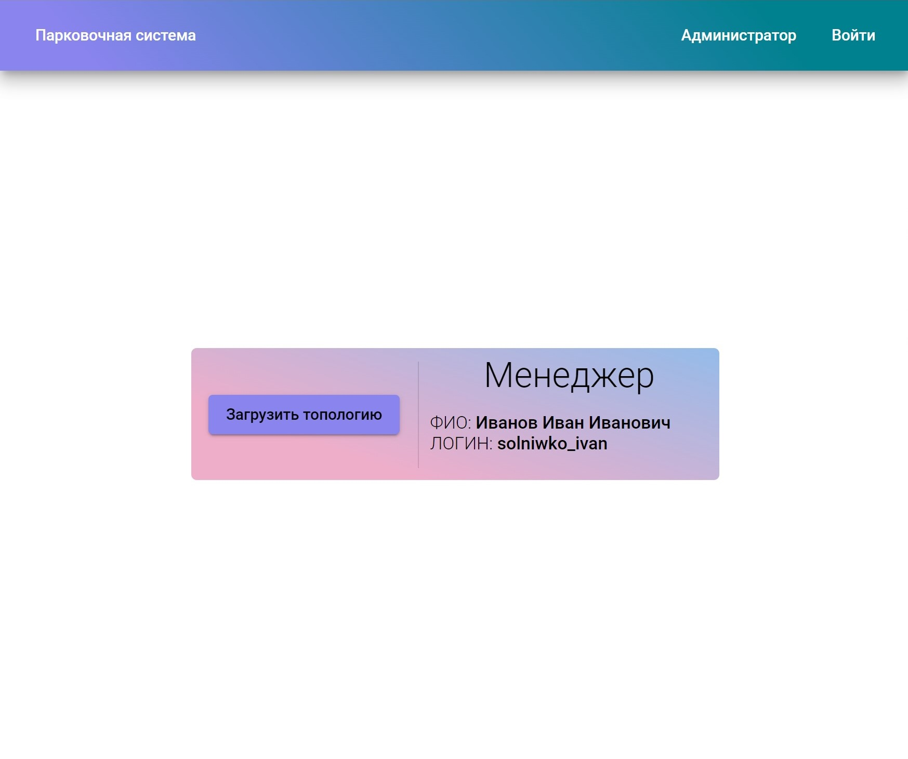
Загрузка файла с топологией, настройка параметров моделирования
При нажатии на кнопку «Загрузить топологию» появляется окно для выбора файла топологии, после открытия которого выводится экранная форма
настройки параметров моделирования, где менеджер может выбрать время начала моделирования, цену по дневному и ночному тарифу,
соотношение легковых и грузовых машин, вид потока, вероятность заезда и времени стоянки.
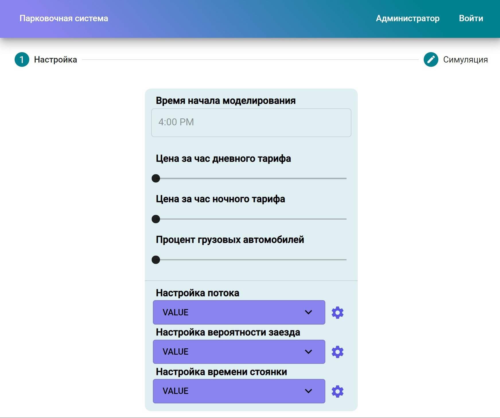
Выбор времени начала моделирования
При нажатии на поле выбора времени открывается диалоговое окно, где менеджер может выбрать время начала моделирования.
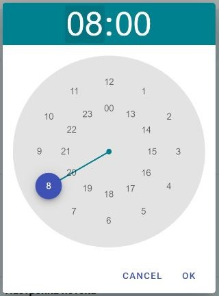
Выбор типа потока, настройка параметров распределения
При нажатии на поле настройки потока появляется выпадающее меню, где
менеджер может выбрать тип потока соответствующего распределения.
Аналогично для полей настройки вероятности заезда и времени стоянки.
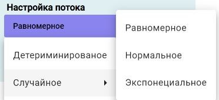
При нажатии на кнопку  открывается диалоговое окно настройки параметров распределения
выбранного закона распределения в выпадающем меню.
открывается диалоговое окно настройки параметров распределения
выбранного закона распределения в выпадающем меню.
Аналогично для остальных законов распределения будут открываться диалоговые окна для выбора соответствующих параметров.
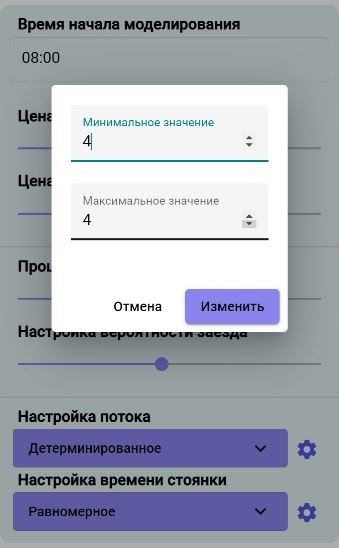
Управление моделированием
При нажатии на кнопку «Симуляция» открывается экранная форма моделирования работы парковки,
где менеджер при помощи кнопок может запустить или остановить моделирование.
Также имеется возможность при помощи кнопок осуществить увеличение , уменьшение масштаба и развернуть окно на весь экран .
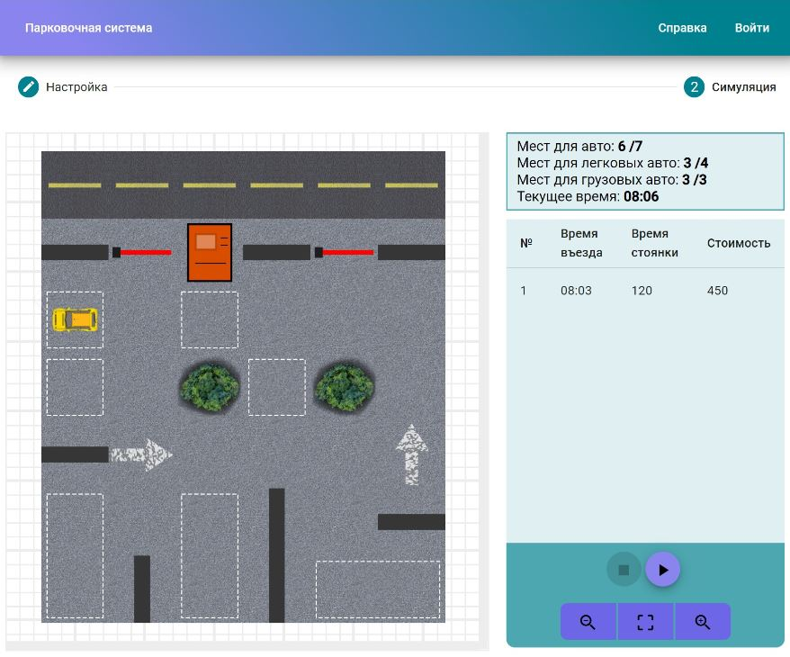